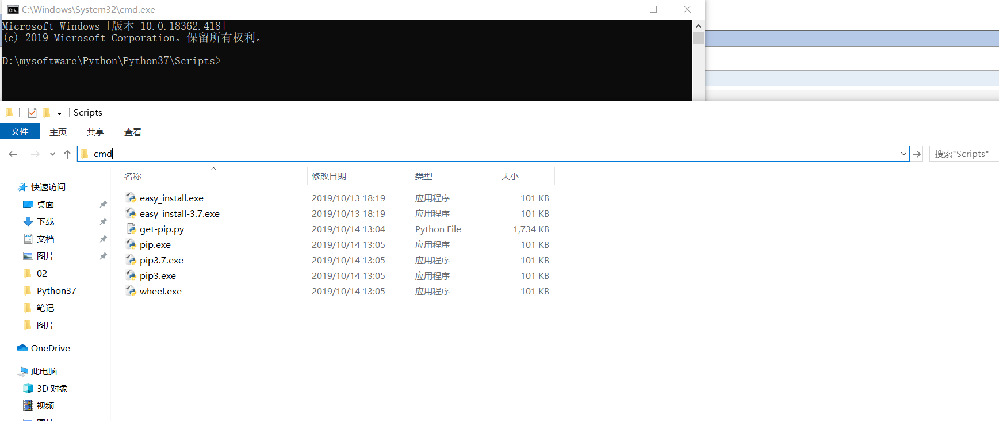

Python3如何安装pip工具？原文出处:本文由博客园博主盛世半月提供。
原文连接:https://www.cnblogs.com/yzh-blog/p/11670995.html
前几天安装Python的时候没有装上pip工具，所以只能现在手动安装了。
- 首先，访问https://bootstrap.pypa.io/get-pip.py这个网址，然后Ctrl+S将get-pip.py文件 保存到你所安装的Python的Scripts目录下；
- 然后进入Scripts目录，并在该目录下输入cmd，进入cmd界面；
- 在命令行界面输入python get-pip.py，pip3工具就会自动安装；
- 安装成功之后输入python -m pip --version， 确保成功安装了pip